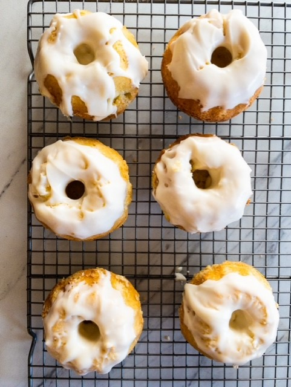

Previous: Cake from Minecraft
Sweet Roll from Skyrim

Someone steal your sweet roll? How about you make another one, or six? Check out
The Geeky Chef if you're
hankering for this Skyrim sweet!
Ingredients
Cake:
- 1 1/2 cups flour
- 1 1/2 cup sugar
- 1/2 cup sugar
- 1/3 cup milk
- 1 egg
- 2 tsp. vanilla extract
- 2 tsp. baking powder
- pinch of salt
- 2 tbs. cinnamon
- 1/4 cup butter, melted
Filling:
- 1/4 cup butter, softened
- 1/4 cup brown sugar
- 1 Tbsp. cinnamon
- 1/2 cup chopped pecans
Icing:
- 1/4 cup cream cheese, softened
- 2 tablespoons milk
- 1 1/2 cups powdered sugar
Directions:
- Preheat oven to 350.
- Mix dry cake ingredients together. Add wet ingredients and mix thoroughly.
- Measure 1 to 1 1/2 cup of batter and bake at 350 degrees Fahrenheit for 30 minutes
- Remove from the cup and cut off the rounded bottom.
- Once the cake is cooled, carve a hole at the top of the cake.
- Make the filling by mixing the ingredients into the hole.
Up next: Kirby Candy Patties